0750 Getting Hugo Image to Work
image picture SVG mermaidjs figure markdown shortcode
The problem
Trying to follow the documentation and forum on how to get an image to display did not seem to work, because there is an assumption about how the generated website is laid out. The original objective was to find a few shortcodes as well as vanilla markdown to see if a responsive image could be displayed with captions, etc.
The image test.png (2408 x 968) in static was used as input to a number of shortcodes etc, but to no avail, because the structure of the generated website was not taken into account.
Eventually, the penny dropped when the generated website was looked at, and the relationships between the HTML and the image location understood.
So, currently, image references in the blog and in hugotips are different, and if the markdown were moved to a different website with a different structure, some editing would be needed to correct any differences.
Initial Mermaid drawing • hugotips
This diagram shows the two up, across and one down relationship between markdown in hugotips and the image in the img folder in static.

Follow on Mermaid • blog
The blog folder structure is different to hugotips, which means that JPEG, PNG and SVG are one up, across and one down as indicated by this SVG made with Mermaid Live Editor which allows diagrams to be made and downloaded in a variety of formats.
This diagram has the corrected folder name within hugotips. The reason for the different structure is something to do with one of the configuration parameters.
Also, at some point, when this approach is understood, there is an alternative method, involving bundling which allows pictures to be placed directly in the relevant blog folder, and hence references are more straightforward.
In the interim, care is needed to look at the generated HTML structure to see how the generated website is laid out.
Here is the SVG using vanilla markdown:

Using the built in figure shortcode
title: mermaid drawing of generated website folders
caption: figure shortcode has other options!
Mermaid diagram definition
graph TD
A[Root] --> B(img)
B -->F(test.png)
A --> C[hugotips]
C -->D[shortcode-for-figure]
D -->E(index.html)
A -->G[0750-getting-hugo-image-to-work]
G -->H(index.html)
imgfig shortcode
No luck with this one even though the right reference given. Have to come back to this. Fortunately other methods are working.
html in markdown
Tried this article about html in markdown but no image apears here.
more on Hugo shortcodes
Responsive images in Hugo
Laura Kalbag • Processing Responsive Images in Hugo
Draft: falseLast update: 2020-11-28 14:52:35 +0000 GMT
Rating: 5
Next and previous could go here